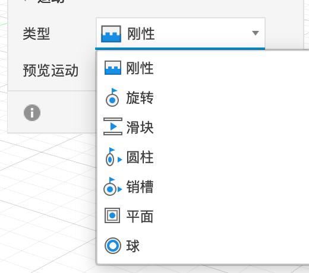
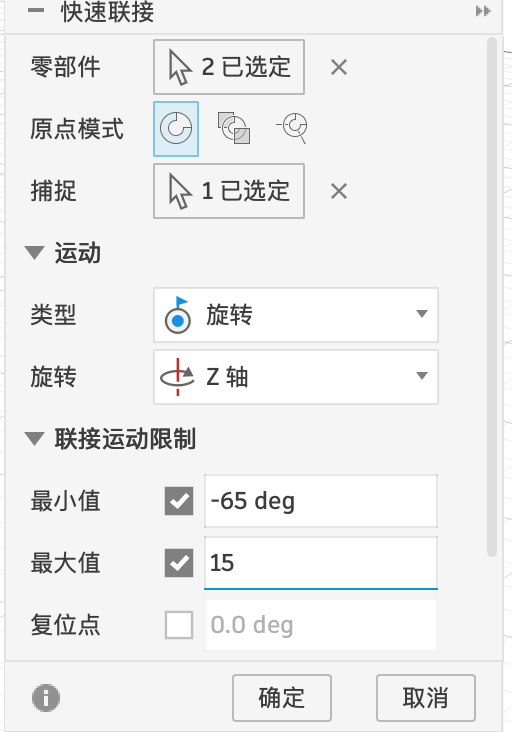
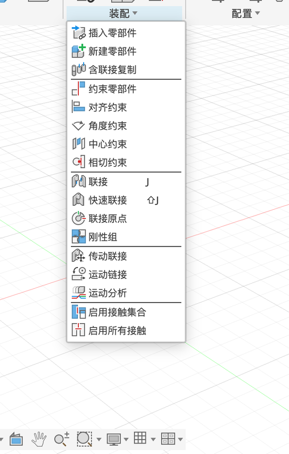

1.5 零部件与联接
做会动的东西，要先分清“实体”和“零部件”，再用“联接”告诉 Fusion 零件之间怎么相对运动。这一页认识 7 种联接类型，以及固定、刚性组、运动限制这些概念。具体操作在案例 P8 里一步步做过。
实体和零部件#
| 实体（Body） | 零部件（Component） | |
|---|---|---|
| 是什么 | 一块形状 | 一个“零件”：可以装一个或多个实体，还有自己的草图、原点、位置 |
| 能不能动 | 不能单独参与联接 | 能：联接、固定、刚性组都是针对零部件的 |
| 浏览器里 | 在「实体」文件夹里 | 一行带小方块图标的“名字:1” |
7 种联接类型#

| 类型 | 能怎么动 | 生活中的例子 |
|---|---|---|
| 刚性 | 完全不能动，焊死 | 螺丝拧紧的两块板 |
| 旋转 | 绕一根轴转 | 门的合页、本案例的铰链 |
| 滑块 | 沿一条直线滑 | 抽屉 |
| 圆柱 | 既能绕轴转，又能沿轴滑 | 门闩、活塞 |
| 销槽 | 绕一根轴转，同时沿另一个方向滑 | 折叠椅的滑槽 |
| 平面 | 在一个平面上任意滑动和转 | 桌上的鼠标 |
| 球 | 绕一个点任意转 | 摄像头云台、人的肩关节 |
联接、快速联接#

| 命令 | 做什么 | 什么时候用 |
|---|---|---|
| 联接 J | 在两个零件上各选一个捕捉点，Fusion 把零件 1 挪过去和零件 2 对齐，然后按类型限制运动 | 零件还没摆好位置（比如刚插入的标准件） |
| 快速联接 | 不挪动零件，只规定从现在的位置起能怎么动 | 零件是在正确位置上直接画的（本案例） |
| 联接原点 | 先在零件上定义一个“接口点”，以后联接时直接选它 | 同一个零件要反复装配 |
| 刚性组 | 几个零件焊成一组 | 螺丝 + 螺母 + 被夹的零件 |
| 传动联接 / 运动链接 | 让一个联接带动另一个（比如齿轮比 1:2） | 齿轮、皮带（第 11 章） |

固定、运动限制、驱动#
- 固定：右键零部件 →「固定」。它变成“地面”，不会被拖动（P8 第 1 步）。
- 运动限制：旋转联接可以设最小 / 最大角度，滑块联接可以设最小 / 最大距离（P8 第 2 步）。
- 拖动：联接建好后，直接用鼠标拖零件，它只会按允许的方式动。
- 运动分析：「装配 → 运动分析」，按时间轴自动播放联接的运动（P8 第 5 步）。
抽屉和柜子之间应该用哪种联接？
✅ 抽屉只能沿一个方向前后滑动，是滑块联接。再加上“最小 0、最大 = 抽屉深度”的运动限制，就不会被拉出来。